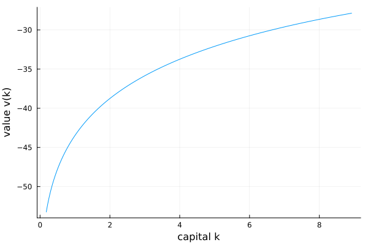
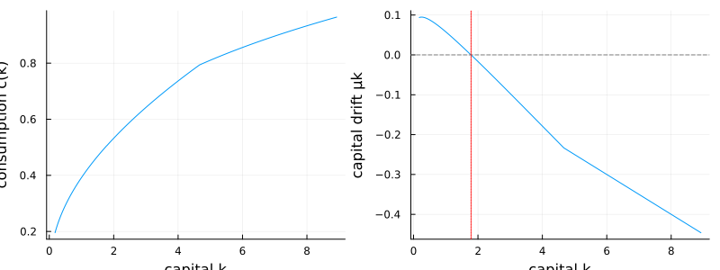

Neoclassical growth model
The deterministic neoclassical (Ramsey–Cass–Koopmans) growth model is the gentlest introduction: one state variable, one value function, and a closed-form steady state to check the solution against. A representative household chooses consumption to solve
\[\max_{c} \int_0^\infty e^{-\rho t}\, \frac{c^{1-\gamma}}{1-\gamma}\, dt \qquad \text{subject to} \qquad \dot k = A k^\alpha - \delta k - c,\]
and the value function $v(k)$ solves the Hamilton–Jacobi–Bellman equation
\[\rho\, v(k) = \max_{c}\; \frac{c^{1-\gamma}}{1-\gamma} + v'(k)\,\bigl(A k^\alpha - \delta k - c\bigr),\]
with first-order condition $c = v'(k)^{-1/\gamma}$.
The model
using EconPDEs, Plots
Base.@kwdef struct NeoclassicalGrowthModel
A::Float64 = 0.5 # productivity
α::Float64 = 0.3 # capital share
δ::Float64 = 0.05 # depreciation
ρ::Float64 = 0.05 # discount rate
γ::Float64 = 2.0 # relative risk aversion
endMain.NeoclassicalGrowthModelThe capital drift $\dot k$ can point either way, so the first derivative is upwinded: forward (vk_up) where the implied drift is positive, backward (vk_down) where it is negative, and the consumption that sets the drift to zero at the steady state in between. We return a second NamedTuple to save consumption c and the drift μk on the grid.
function (m::NeoclassicalGrowthModel)(state::NamedTuple, u::NamedTuple)
(; A, α, δ, ρ, γ) = m
(; k) = state
(; v, vk_up, vk_down) = u
c_up = vk_up >= 0 ? min(vk_up^(-1 / γ), A * k^α) : 10 * A * k^α
μk_up = A * k^α - δ * k - c_up
if μk_up > 0
c, vk, μk = c_up, vk_up, μk_up
else
c_down = vk_down >= 0 ? min(vk_down^(-1 / γ), A * k^α) : 10 * A * k^α
μk_down = A * k^α - δ * k - c_down
if μk_down < 0
c, vk, μk = c_down, vk_down, μk_down
else
μk = 0.0
c = A * k^α - δ * k
vk = c^(-γ)
end
end
vt = -(c^(1 - γ) / (1 - γ) + μk * vk - ρ * v)
return (; vt), (; c, μk)
endSolving it
Put capital on a grid around the closed-form steady state $\bar k$ defined by $\alpha A \bar k^{\alpha-1} = \rho + \delta$, and start from the value of consuming gross output forever.
m = NeoclassicalGrowthModel()
(; A, α, δ, ρ, γ) = m
k̄ = (α * A / (ρ + δ))^(1 / (1 - α))
stategrid = (; k = range(0.1 * k̄, 5 * k̄, length = 1000))
yend = (; v = [(A * k^α)^(1 - γ) / (1 - γ) / ρ for k in stategrid[:k]])
result = pdesolve(m, stategrid, yend)Residual_norm: 8.518183048661883e-12
Zero: OrderedDict(:v => [-53.23937610063287, -53.01027019120199, -52.789383227268154, -52.57608592254254, -52.3698216636727, -52.17009549273561, -51.97646512814975, -51.78853358379498, -51.605943053834764, -51.42836980921254 … -27.926573269501773, -27.919527488520252, -27.912489530513863, -27.905459380144258, -27.89843702211583, -27.89142244117558, -27.884415622112964, -27.877416549759722, -27.87042520898975, -27.863441584718945])
The solution
The value function is increasing and concave in capital:
ks = stategrid[:k]
plot(ks, result.zero[:v]; xlabel = "capital k", ylabel = "value v(k)", legend = false)
Consumption rises with capital (left). The capital drift $\mu_k$ (right) is positive below the steady state and negative above it, crossing zero exactly at $\bar k$ — the saddle-path-stable steady state the economy is drawn toward.
p1 = plot(ks, result.optional[:c]; xlabel = "capital k", ylabel = "consumption c(k)", legend = false)
p2 = plot(ks, result.optional[:μk]; xlabel = "capital k", ylabel = "capital drift μk", legend = false)
hline!(p2, [0.0]; color = :gray, linestyle = :dash)
vline!(p2, [k̄]; color = :red, linestyle = :dot)
plot(p1, p2; layout = (1, 2), size = (800, 300))
This page was generated using Literate.jl.